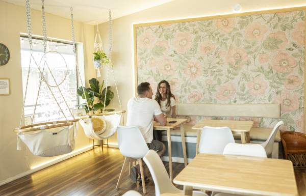
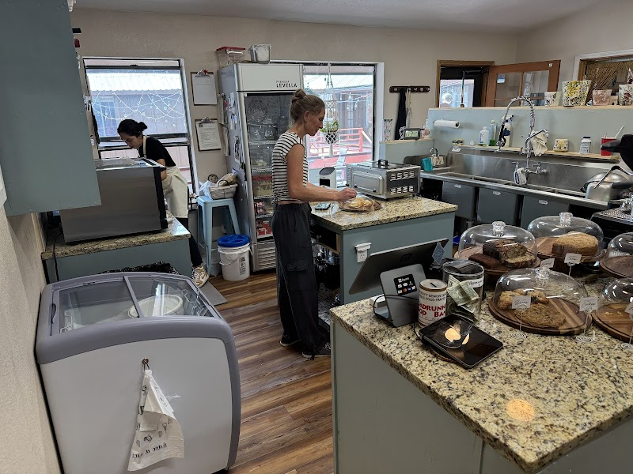
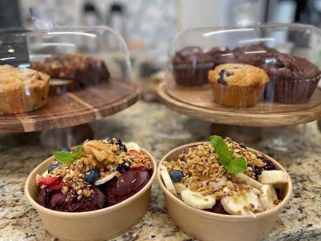
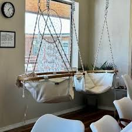
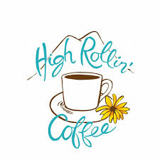

Beth's Story
Owner Beth Offolter is a Cottonwood Canyon native who spent 13 years as a chef on private yachts, traveling the world before returning to New Mexico with her young son just before COVID. When she couldn't return to yacht work, she pivoted to her dream of opening a cafe. In just four months after signing the lease, High Rollin' Coffee opened its doors on August 11, 2023.
Beth set out to create a space that feels warm, familiar, calming, and uplifting. Nearly 90% of everything served is made from scratch daily using organic, non-GMO ingredients. The cafe has become a beloved gathering spot, with 90% of customers being locals—all built through word of mouth.

Highlights
Three reasons to start your morning at High Rollin'.
Made From Scratch
90% of everything served is made in-house daily with high-quality, organic ingredients. From syrups to scones, it's all handcrafted.
Health & Wellness
Vegetarian-focused menu emphasizing organic, non-GMO, wholesome ingredients. Vegan options always available.
Cozy Atmosphere
A warm, calming space with charming decor and hammock chairs to relax in. Built by a former yacht chef with world-class taste.
Visit High Rollin' Coffee
Everything you need to know before visiting.
Location
109 James Canyon Hwy, Cloudcroft, NM 88317. Right in the heart of the village.
Hours
Monday–Tuesday: 8AM–1PM. Friday–Sunday: 8AM–3PM. Closed Wednesday & Thursday.
Follow Us
Follow High Rollin' Coffee on Facebook for daily specials, seasonal menus, and updates on hours.
Good to Know
Opened August 2023 by former yacht chef Beth Offolter. Hammock chairs available. 90% of customers are locals—a true community gem.
Inside High Rollin' Coffee
A look at the cafe, the food, and the vibe.




Start Your Morning Right
Stop by for handcrafted coffee, fresh-baked treats, and a warm welcome from Beth. Organic, wholesome, and made with love.